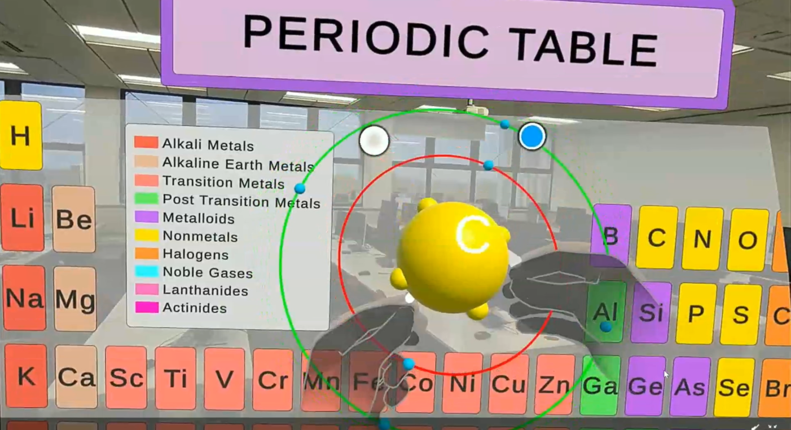

Learning can be so much more than textbooks and diagrams, and Molecule MR proves it. This app takes something as tricky as molecular chemistry and makes it simple, exciting, and hands-on. By blending Mixed Reality (MR) with the intelligence of Large Language Models (LLMs), Molecule creates a whole new way to explore and understand chemistry. With Teach Mode, teachers get powerful tools to bring lessons to life. They can show detailed 3D visuals of atoms and molecules, making even the toughest concepts easy to see and understand. Learn Mode is where students can dive in at their own pace, guided by a helpful AI that’s there to explain, encourage, and challenge them along the way. Let’s face it, chemistry can feel overwhelming. Trying to picture atomic structures, electron configurations, or molecular bonds from a textbook isn’t easy. That’s why Molecule is such a game-changer. It turns those abstract ideas into something you can actually see and interact with, in stunning 3D. Whether you're building atoms or watching electrons orbit around an atom, it all starts to click. And the best part? The AI adapts to your learning style, making the whole experience feel personal and approachable.
Mixed Reality (MR) Interaction
AI-Driven Personalization
Interactive 3D Periodic Table
Atomic and Molecular Simulation
Task-Based Learning Modes

Molecule brings a fresh perspective to education, introducing groundbreaking ways to make learning more engaging and interactive. By combining MR and AI, the app offers a completely new approach to teaching chemistry, allowing students to see, touch, and interact with atoms, bonds, and molecules in a virtual space. This hands-on experience bridges the gap between abstract theories and tangible understanding, helping learners truly connect with the material. The app’s conversational AI, powered by voice-to-text and LLMs, creates a human-like teaching experience that feels natural and responsive, making learning more enjoyable and less intimidating. Rather than just presenting information, Molecule focuses on active learning. Students work through structured, taskbased activities that align with curriculum goals, solving problems and experimenting with models to deepen their understanding. This interactive approach helps make the learning process feel practical and rewarding. What makes Molecule even more exciting is its potential to go beyond chemistry. The same combination of MR and AI could easily be adapted to other STEM fields like biology, physics, and mathematics, offering new ways to make education more interactive and engaging across disciplines. Through its innovative blend of technology and design, Molecule is reshaping what education can be. It’s not just a tool for teaching, it’s a whole new way of learning that inspires curiosity, encourages exploration, and makes complex subjects feel exciting and achievable.